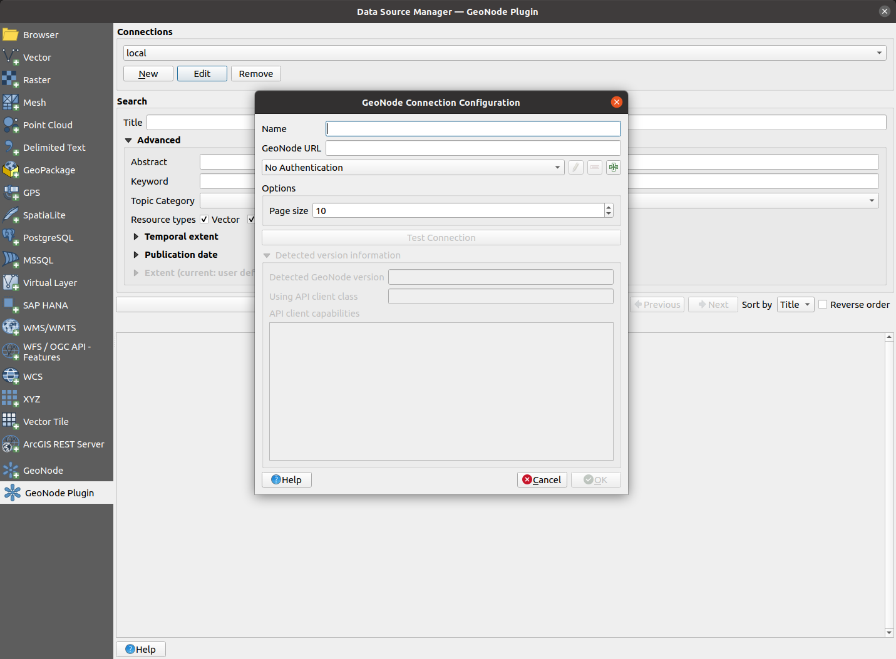
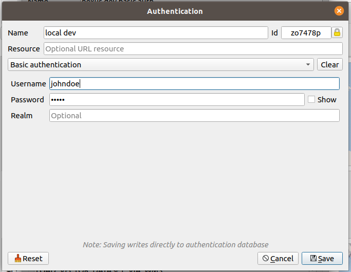
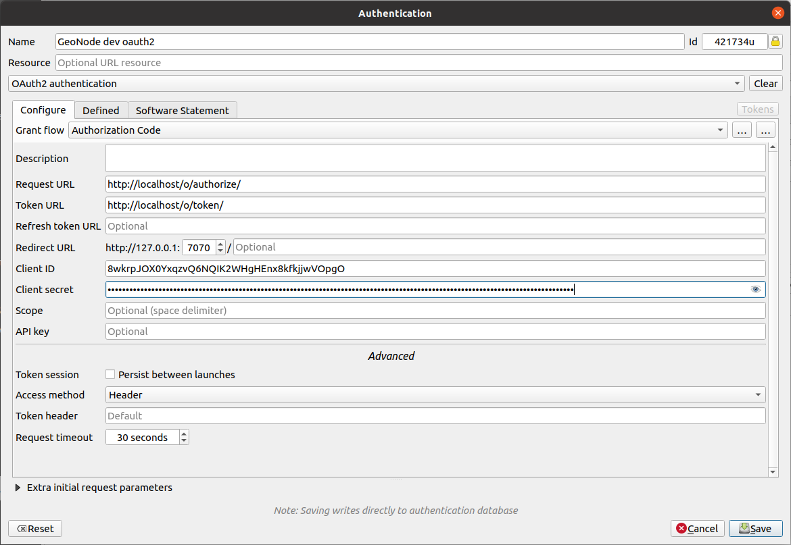
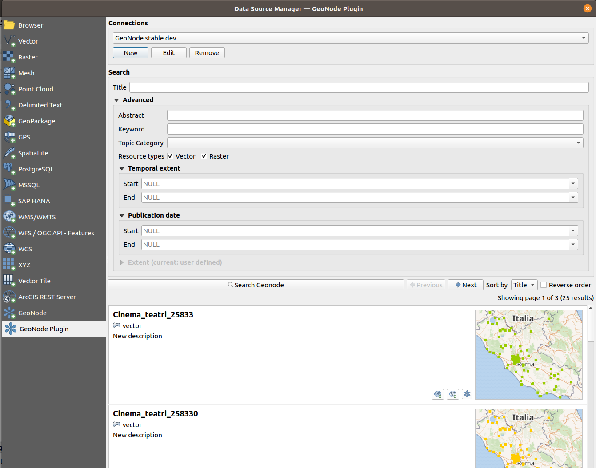
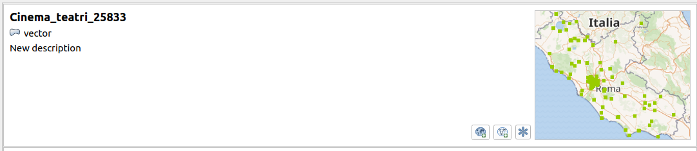
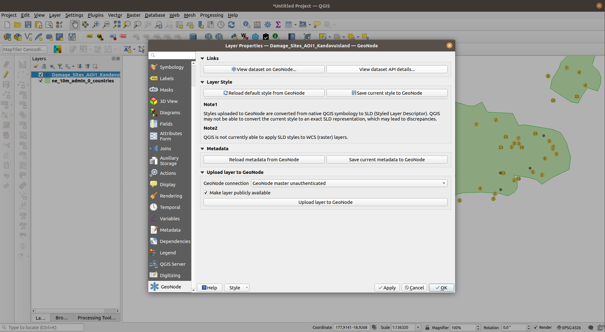
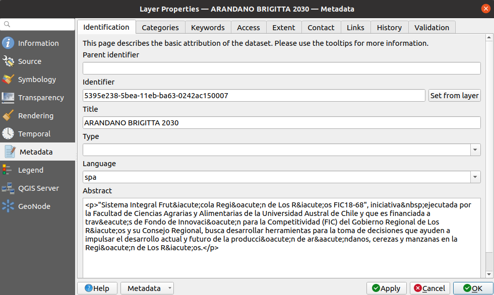

User guide¶
Managing GeoNode connections¶
The QGIS GeoNode plugin adds a new Geonode Plugin section to the QGIS Data Source Manager dialogue. This section can be used to add new GeoNode connections, search for existing datasets and load them as QGIS layers.
Add a new GeoNode connection¶

In order to add a new GeoNode connection:
-
Open the QGIS
Data Source Manager (Ctrl + L)and go to the GeoNode Plugin section -
Add a new GeoNode instance connection, by clicking the
Newbutton -
A new dialogue is shown. This dialogue requests the following details of the GeoNode connection being created:
Parameter Description Name The name used by QGIS to refer to this connection GeoNode URL The base URL of the GeoNode being connected to (e.g. https://stable.demo.geonde.org) Authentication Whether to use authentication to connect to GeoNode or not. See the Configure authentication section below for more details on how to configure authenticated access to GeoNode Page size How many search results per page shall be shown by QGIS. This defaults to 10WFS version Which version of the Web Feature Service (WFS) to use for requesting vector layers from the remote GeoNode. Defaults to v1.1.0.Note
There is currently a bug in QGIS which prevents using WFS version 2.0.0 for editing a vector layer's geometry,
https://github.com/qgis/QGIS/issues/47254
Therefore, for the time being, we reccomend using WFS version 1.1.0, which works OK.
-
Optionally you may now click the
Test Connectionbutton. QGIS will then try to connect to GeoNode in order to discover what version of GeoNode is being used by the remote server.Upon a successful connection, the detected GeoNode version will be shown below. Depending on the detected GeoNode version, the plugin may not be able to offer all of its functionalities. The supported capabilities are listed in the
API client capabilitiessection. Check the Supported capabilities section below for more information about capabilities -
Finally, accept the new connection dialogue by clicking the
Okbutton. Your new connection is now ready to be used.
Edit an existing connection¶
In order to edit the details of an existing connection, just re-open the
QGIS Data Source Manager (Ctrl + L), go to the GeoNode plugin section,
select the relevant connection from the Connections dropdown and click the
Edit button. A dialogue similar to the one discussed above in the
Add a new GeoNode connection section shall be
shown with the connection details ready for editing
Remove a GeoNode connection¶
In order to remove an existing connection, re-open the
QGIS Data Source Manager (Ctrl + L), go to the GeoNode plugin section,
select the relevant connection from the Connections drop down and click the
Remove button. A confirmation dialogue will ask whether to really remove the
connection. Upon acceptance of this dialogue, the connection will be removed.
Configure authentication¶
The plugin is able to authenticate to remote GeoNode instances by using HTTP Basic Auth (OAuth2 is also an option, if you really want it).

In order to configure Basic Auth:
-
Open the main QGIS authentication settings dialogue by going to
Settings -> Options...in the main QGIS menu bar and then access theAuthenticationsection -
Press the
Add new authentication configuration button. A new dialogue is shown. In this dialogue, fill in the following details:Parameter Description Name The name used by QGIS to refer to the authentication configuration Authentication type Select the Basic authenticationoption from the dropdownUsername Your GeoNode username Password Your GeoNode user password The remaining fields can be left at their default values
-
Now when configuring a new GeoNode connection, select this newly created authentication configuration in order to have the GeoNode connection use it
Extra - Using OAuth2 for authorization
This option is not recommended in most cases, since it involves a more advanced set up and also requires requesting additional information from the remote GeoNode administrators. It may be viable when connecting to GeoNode using shared computing resources, where you do not want to store your GeoNode user credentials locally.
In order to be able to gain authenticated access to a GeoNode connection via OAuth2 you will need to request that one of the GeoNode administrators create an OAuth2 application and provide you with the following relevant details:
- Client ID
- Client Secret

Most OAuth2 grant types implemented in QGIS are supported. We recommend using
the Authorization Code grant type. In order to configure such an authentication:
-
Open the main QGIS authentication settings dialogue by going to
Settings -> Options...in the main QGIS menu bar and then access theAuthenticationsection -
Press the
Add new authentication configuration button. A new dialogue is shown. In this dialogue, fill in the following details:Parameter Description Name The name used by QGIS to refer to the authentication configuration Authentication type Select the OAuth2 authenticationoption from the dropdownRequest URL This is derived from the GeoNode base URL and takes the form <geonode-base-url>/o/authorize/, e.g. https://stable.demo.geonode.org/o/authorize/Token URL This is derived from the GeoNode base URL and takes the form <geonode-base-url>/o/token/, e.g. https://stable.demo.geonode.org/o/token/Client ID The client ID you got from your GeoNode administrator Client Secret The client secret you got from your GeoNode administrator The remaining fields can be left at their default values
-
Now when configuring a new GeoNode connection, select this newly created authentication configuration in order to have the GeoNode connection use it
Searching GeoNode datasets¶

After having configured a GeoNode connection, you may now use the plugin to search and load GeoNode datasets onto QGIS
- Select the relevant connection from the dropdown list
-
Set any desired filters. Depending on the detected GeoNode version, the following search filters may be available:
Search filter Description Title The resource title is used to filter search results and returning records that contains the supplied title Abstract Same as the title filter, records that contains the provided abstract value will be returned Keywords Search will filter all resources that have keywords that exactly matches the selected keyword Topic Category Filters the resources that their categories exactly matches the selected category Resources types Filters resources based on the selected resource type Temporal extent This filter used to select resources based on the stored temporal extent. Two fields startandendare used to represent the beginning and end of the extent respectively, during filtering both fields values are excluded. When both fields are supplied, resources containing temporal extent that is greater thanstartand less thanendwill be returned. If onlystartis provided, resources with the temporal extent beginning that is greater thanstartwill be returned, if onlyendis provided resource with temporal extent end that is less thanendwill be returnedPublication date This filter has similar conditions as the Temporal extent filter, the difference here is the filter is applied to the resource's publication date and not the resources temporal extent Spatial Extent The spatial extent filter is used to filter resources based on their geospatial extent, the extent can be filled by using a QGIS layer extent, map canvas extent or values can be manually added -
Choose which field to use for sorting the search results and whether to reverse the sort order.
Note
Sorting is performed by the remote GeoNode server. Therefore it must be parametrized before actually searching the remote. If you wish to change the sort order after having already performed a search then you need to press the
Search GeoNodebutton again. -
Press the
Search Geonodebutton. The plugin proceeds to contact the remote GeoNode instance and search for available datasets.
After searching is complete a list of search results is shown below the
search buttons. If a large number of results has been found you may use the
previous and next buttons to paginate through the whole result set and
eventually inspect all of them.
Search results¶

Each dataset shown on the search results list features the following elements:
| Parameter | Description |
|---|---|
| Title | The title of the dataset |
| Dataset type | Wheter the dataset is a vector or a raster |
| Abstract | Brief description about the dataset |
| Thumbnail | Small image representation of the dataset |
| Load layer via WMS | Button to allow loading the dataset onto QGIS as a WMS layer |
| Load via WFS/WCS | Depending on the type of dataset, a button to load the dataset onto QGIS either as a WFS (for vectors) or WCS (for raster) layer |
| Open dataset in web browser | Button to open your web browser and visit the original dataset URL on the remote GeoNode instance |
Working with GeoNode layers¶

After having discovered some interesting datasets, press one of their
respective load buttons to load them as QGIS layers.
Layer metadata¶
For layers that came from GeoNode, their metadata is also populated from
GeoNode. Metadata can be inspected by opening the layer properties
dialogue (double-click the layer name on the QGIS layers list) and
navigating to the Metadata section.

If the relevant plugin capabilities are available for the detected GeoNode version, it may also be possible to modify some metadata fields and save them back to GeoNode. This can be achieved by:
-
Modifying the relevant metadata property by using the QGIS layer metadata section of the layer properties dialogue
Note
The current version of the QGIS GeoNode plugin is only able to upload the following metadata fields back to GeoNode:
- Title
- Abstract
-
Navigating to the
GeoNodesection of the layer properties dialogue and locating theMetadatagroup -
Pressing the
Save current metadata to GeoNodebutton. The plugin then proceeds to upload the metadata back to GeoNode.Note
Uploading metadata back to GeoNode is likely an operation that requires your GeoNode connection to use authentication.
Layer symbology¶
Depending on the layer type and on the capabilities supported by the plugin for the detected GeoNode version, the plugin may be able to load a layer's symbology from the remote GeoNode.
Note
GeoNode datasets export their symbology using the OGC Styled Layer Descriptor (.sld) format.
QGIS is not currently able to load SLD for raster layers. Therefore, the QGIS GeoNode plugin is only able to style datasets which are loaded using the WFS vector provider
The plugin may also be able to modify the layer symbology and upload it back to the remote GeoNode. This can be achieved by:
-
Modifying the layer symbology using QGIS symbology tools
-
Navigating to the
GeoNodesection of the layer properties dialogue and locating theLayer stylegroup -
Pressing the
Save current style to GeoNodebutton. The plugin then proceeds to upload the symbology back to GeoNode.Warning
Uploading symbology back to GeoNode requires an intermediary step whereby the QGIS native symbology is converted to OGC SLD, which is the format GeoNode understands.
Unfortunately it is currently not possible to perfectly match all QGIS native symbology features to SLD. Therefore, the resulting exported symbology may differ from the original
Note
Uploading symbology back to GeoNode is likely an operation that requires your GeoNode connection to use authentication.
Uploading existing QGIS layers to GeoNode¶
The plugin allows uploading existing QGIS layers to GeoNode. This can be achieved by:
-
Load some layer onto QGIS. Any vector or raster layer should work
-
Access the layer properties dialog and navigate to the
GeoNodesection. Then locate theUpload layer to GeoNodegroup -
Select an appropriate connection from the
GeoNode connectiondrop down. -
Choose the default visibility to be applied to the uploaded layer by toggling the
Make layer publicly availablecheckbox as appropriate -
Press the
Upload layer to GeoNodebutton. The plugin then proceeds to upload the layer to GeoNode.Note
Uploading a QGIS layer to GeoNode is likely an operation that requires your GeoNode connection to use authentication.
Note
The current version of this plugin uses a timeout of ten minutes for the layer upload operation, which may be a limitation for large files. A future version of the plugin may allow the user to modify this value.
Plugin capabilities¶
Depending on the detected version of GeoNode, the plugin may allow performing different actions. These are classified as a set of capabilities.
| Capability | Available for GeoNode version | Description |
|---|---|---|
| FILTER_BY_TITLE | All | Filter datasets by their title property according to the presence of a user-provided sub-string |
| FILTER_BY_ABSTRACT | All | Filter datasets by abstract property according to the presence of a user-provided sub-string |
| FILTER_BY_RESOURCE_TYPES | All | Filter datasets by their type (vector or raster) |
| FILTER_BY_KEYWORD | >= 3.3.0 | Filter datasets by an arbitrary keyword |
| FILTER_BY_TOPIC_CATEGORY | >= 3.3.0 | Filter datasets by their ISO topic category |
| FILTER_BY_TEMPORAL_EXTENT | >= 3.3.0 | Filter datasets by their temporal extent |
| FILTER_BY_PUBLICATION_DATE | >= 3.3.0 | Filter datasets by their publication date |
| FILTER_BY_SPATIAL_EXTENT | - | Filter datasets by a spatial bounding box |
| LOAD_LAYER_METADATA | >= 3.3.0 | Load dataset metadata onto QGIS when loading as a layer |
| MODIFY_LAYER_METADATA | >= 3.3.0 | Upload metadata fields of a loaded QGIS layer back to GeoNode |
| LOAD_VECTOR_LAYER_STYLE | >= 3.3.0 | Load SLD style onto QGIS when loading GeoNode dataset as a QGIS vector layer |
| LOAD_RASTER_LAYER_STYLE | - | Load SLD style onto QGIS when loading GeoNode dataset as QGIS raster layer |
| MODIFY_VECTOR_LAYER_STYLE | >= 3.3.0 | Upload vector layer symbology back to GeoNode NOTE: This functionality is currently not supported when using HTTP Basic Authentication. Check https://github.com/kartoza/qgis_geonode/issues/222 for more information |
| MODIFY_RASTER_LAYER_STYLE | >= 3.3.0 | Upload raster layer symbology back to GeoNode NOTE: This functionality is currently not supported when using HTTP Basic Authentication. Check https://github.com/kartoza/qgis_geonode/issues/222 for more information |
| LOAD_VECTOR_DATASET_VIA_WMS | All | Load GeoNode vector dataset as a QGIS layer via OGC WMS |
| LOAD_VECTOR_DATASET_VIA_WFS | All | Load GeoNode vector dataset as a QGIS layer using via OGC WFS |
| LOAD_RASTER_DATASET_VIA_WMS | All | Load GeoNode raster dataset as a QGIS layer via OGC WMS |
| LOAD_RASTER_DATASET_VIA_WCS | All | Load GeoNode raster dataset as a QGIS layer via OGC WCS |
| UPLOAD_VECTOR_LAYER | >= 3.4.0 | Upload QGIS vector layer to GeoNode |
| UPLOAD_RASTER_LAYER | >= 3.4.0 | upload QGIS raster layer to GeoNode |